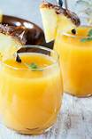
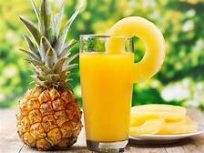

JUICE
Juice is a drink made from the extraction or pressing of the natural liquid contained in fruit and vegetables. It can also refer to liquids that are flavored with concentrate or other biological food sources, such as meat or seafood, such as clam juice. Juice is commonly consumed as a beverage or used as an ingredient or flavoring in foods or other beverages, as for smoothies. Juice emerged as a popular beverage choice after the development of pasteurization methods enabled its preservation without using fermentation (which is used in wine production).[1] The largest fruit juice consumers are New Zealand (nearly a cup, or 8 ounces, each day) and Colombia (more than three quarters of a cup each day). Fruit juice consumption on average increases with country income level.
FRESH PINE R30
ORANGE R47

PINE APPLE R65
